主帖标题: 股票金融【周一值班团队】请跟帖报到.
占事：1月19-23日大盘涨跌?
公历时间：2009年1月16日15时20分 星期五
干支：戊子年 乙丑月 辛酉日 丙申时 (旬空：子丑)
神煞：驿马-亥 桃花-午 日禄-酉 贵人-寅，午
震宫：水风井 巽宫：巽为风（六冲）
六神 伏 神 【本 卦】 【变 卦】
螣蛇 ▅▅ ▅▅ 父母戊子水 ×→ ▅▅▅▅▅ 兄弟辛卯木 世
勾陈 ▅▅▅▅▅ 妻财戊戌土 世 ▅▅▅▅▅ 子孙辛巳火
朱雀 子孙庚午火 ▅▅ ▅▅ 官鬼戊申金 ▅▅ ▅▅ 妻财辛未土
青龙 ▅▅▅▅▅ 官鬼辛酉金 ▅▅▅▅▅ 官鬼辛酉金 应
玄武 兄弟庚寅木 ▅▅▅▅▅ 父母辛亥水 应 ▅▅▅▅▅ 父母辛亥水
白虎 ▅▅ ▅▅ 妻财辛丑土 ▅▅ ▅▅ 妻财辛丑土
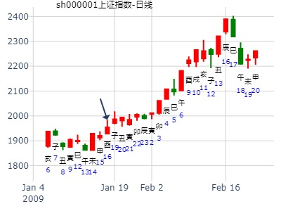
丑月酉日，兄弟被冲飞，反而能涨。
占事：中国A股市场于公历年2011年1月4日己未日上证指数的行情走势
方式：手工指定
公历：2011年1月3日8时39分 星期一 北京时间
干支：庚寅年 戊子月 戊午日 丙辰时 旬空：午未 午未 (子丑) 子丑
干支: 庚寅年戊子月戊午日 (旬空: 子丑 )
水风井 巽为风
六神 伏神 本 卦 变 卦
朱雀 ▅▅ ▅▅ 父母子水 Ｘ→ ▅▅▅▅▅ 兄弟卯木 世
青龙 ▅▅▅▅▅ 妻财戌土 世 ▅▅▅▅▅ 子孙巳火
玄武 子孙午火▅▅ ▅▅ 官鬼申金 ▅▅ ▅▅ 妻财未土
白虎 ▅▅▅▅▅ 官鬼酉金 ▅▅▅▅▅ 官鬼酉金 应
腾蛇 兄弟寅木▅▅▅▅▅ 父母亥水 应 ▅▅▅▅▅ 父母亥水
勾陈 ▅▅ ▅▅ 妻财丑土 ▅▅ ▅▅ 妻财丑土
看来大盘要开门绿了！此卦看跌!
王评：虽然是子月，但是午日子孙旺，未日又墓兄弟，冲实丑土。大涨一下。
上证指数元月26-30日行情预测？[六爻预测]再人
起卦时间：2015年01月26日09时15分起卦方式：电脑自动
干支：甲午年 丁丑月 壬寅日 乙巳时 旬空：辰巳 申酉 辰巳 寅卯
六神 伏神 震宫：水风井 巽宫：巽为风（六冲）
【本 卦】 【变 卦】
白虎 ▅▅ ▅▅ 父母戊子水 ×→ ▅▅▅▅▅ 兄弟辛卯木 世
滕蛇 ▅▅▅▅▅ 妻财戊戌土 世 ▅▅▅▅▅ 子孙辛巳火
勾陈 子孙庚午火 ▅▅ ▅▅ 官鬼戊申金 ▅▅ ▅▅ 妻财辛未土
朱雀 ▅▅▅▅▅ 官鬼辛酉金 ▅▅▅▅▅ 官鬼辛酉金 应
青龙 兄弟庚寅木 ▅▅▅▅▅ 父母辛亥水 应 ▅▅▅▅▅ 父母辛亥水
玄武 ▅▅ ▅▅ 妻财辛丑土 ▅▅ ▅▅ 妻财辛丑土
《井》上六：井收勿幕，有孚元吉。《象》曰：“元吉”在“上”，大成也。
断：全周看跌（父母独动化忌神卯木合克持世之财爻戌土）。
其中：
26日周一壬寅日跌；
27日周二癸卯日跌、可能大跌；
28日周三甲辰日跌；
29日周四乙巳日涨（冲飞露伏否）
30日周五丙午日涨，可能大涨。
注：周末出差长沙。今晨以“电脑自动”方式，匆忙起卦预判如上，效果与手摇硬币起卦同。
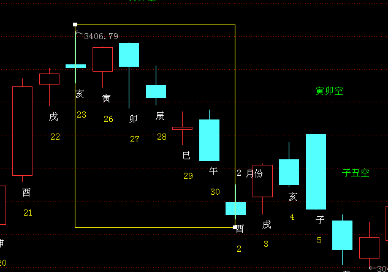
求测人：某人，男，庚申(1980年)，手工指定(起卦方式)
占问事宜：丑月上证 -by ppm555
公历：2016年1月2日13时0分，星期六。
干支：乙未年 戊子月 癸未日 己未时 (卦身：辰)
主变卦 水风井(震宫) 之 巽为风(巽宫) [空亡:申、酉]
白虎 ▅▅ ▅▅×父母戊子水 ▅▅▅▅▅ 兄弟辛卯木 世
螣蛇 ▅▅▅▅▅ 妻财戊戌土 世 ▅▅▅▅▅ 子孙辛巳火
勾陈 子孙庚午火 ▅▅ ▅▅ 官鬼戊申金 ▅▅ ▅▅ 妻财辛未土
朱雀 ▅▅▅▅▅ 官鬼辛酉金 ▅▅▅▅▅ 官鬼辛酉金 应
青龙 兄弟庚寅木 ▅▅▅▅▅ 父母辛亥水 应 ▅▅▅▅▅ 父母辛亥水
玄武 ▅▅ ▅▅ 妻财辛丑土 ▅▅ ▅▅ 妻财辛丑土
初爻日破。
目前没有仓位而测
亥水用事，子动，化卯
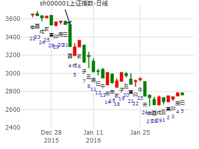
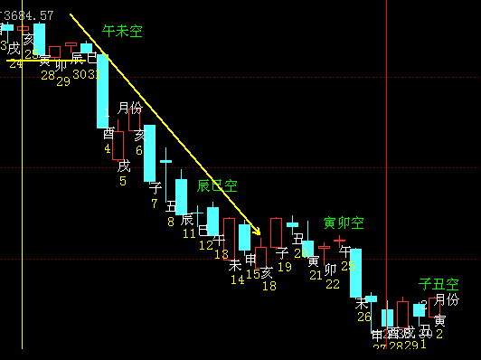
主帖标题: 地产板块在接下来一个月将面临大跌
出生年：19**年 性别：男 占事: 地产股2月21日-4月1日走势
起卦方式：手动摇卦
公历时间：2011年2月20日0时1分 农历时间：辛卯年正月十八日子时
干支：辛卯年 庚寅月 丙午日 戊子时
旬空：午未 午未 寅卯 午未
震宫：水风井 巽宫：巽为风（六冲）
六神 伏 神 【本 卦】 【变 卦】
青龙 ▄▄ ▄▄ 父母戊子水 X-> ▄▄▄▄▄ 兄弟辛卯木 世
玄武 ▄▄▄▄▄ 妻财戊戌土 世 ▄▄▄▄▄ 子孙辛巳火
白虎 子孙庚午火 ▄▄ ▄▄ 官鬼戊申金 ▄▄ ▄▄ 妻财辛未土
螣蛇 ▄▄▄▄▄ 官鬼辛酉金 ▄▄▄▄▄ 官鬼辛酉金 应
勾陈 兄弟庚寅木 ▄▄▄▄▄ 父母辛亥水 应 ▄▄▄▄▄ 父母辛亥水
朱雀 ▄▄ ▄▄ 妻财辛丑土 ▄▄ ▄▄ 妻财辛丑土
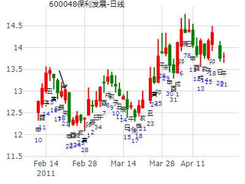
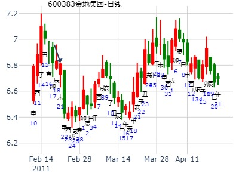
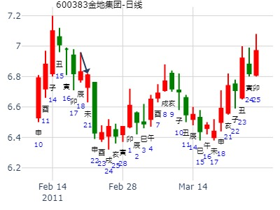
井之巽，井收勿幕，暴涨。2012年寅月上海股市走势（青和）
手工指定 (周易世界 www.zhouyiworld.com)
公历时间：2012年2月4日22时7分
干 支：壬辰年 壬寅月 乙未日 丁亥时
旬 空：午未 辰巳 辰巳 午未
神 煞：驿马─巳 桃花─子 日禄─卯 贵人─子，申
震宫：水风井 巽宫：巽为风（六冲）
六神 伏 神 【本 卦】 【变 卦】
玄武 ▄▄ ▄▄ 父母戊子水 X-> ▄▄▄▄▄ 兄弟辛卯木 世
白虎 ▄▄▄▄▄ 妻财戊戌土 世 ▄▄▄▄▄ 子孙辛巳火
螣蛇 子孙庚午火 ▄▄ ▄▄ 官鬼戊申金 ▄▄ ▄▄ 妻财辛未土
勾陈 ▄▄▄▄▄ 官鬼辛酉金 ▄▄▄▄▄ 官鬼辛酉金 应
朱雀 兄弟庚寅木 ▄▄▄▄▄ 父母辛亥水 应 ▄▄▄▄▄ 父母辛亥水
青龙 ▄▄ ▄▄ 妻财辛丑土 ▄▄ ▄▄ 妻财辛丑土
此处世爻财土地得日扶。本来子水化兄弟不为好事。尤其是兄弟值月。
1.兄弟值月，依然暴涨，莫非是不上卦的原因。
2.父化兄，本为不利组合，依然涨。（一种解释是父母到了六位是极位了。）
3.大象，井化巽，巽为大利商业。
马后炮：2014年10月10日
额外的原因，是兄弟入日墓
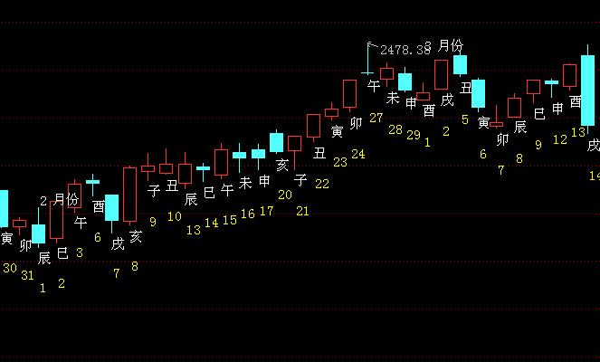
主帖标题: 上海电力[600021]明日何时卖出能的财？
上海电力[600021]明天涨跌如何？
干支：丁亥 癸卯 乙卯 乙酉 (子丑空) 丁亥年二月初四
时间：2007/03/22 17:32:10)
水风井 巽为风
六神 伏神 本 卦 变 卦
玄武 ▅▅ ▅▅ 父母子水 Ｘ→ ▅▅▅▅▅ 兄弟卯木 世
白虎 ▅▅▅▅▅ 妻财戌土 世 ▅▅▅▅▅ 子孙巳火
腾蛇 子孙午火▅▅ ▅▅ 官鬼申金 ▅▅ ▅▅ 妻财未土
勾陈 ▅▅▅▅▅ 官鬼酉金 ▅▅▅▅▅ 官鬼酉金 应
朱雀 兄弟寅木▅▅▅▅▅ 父母亥水 应 ▅▅▅▅▅ 父母亥水
青龙 ▅▅ ▅▅ 妻财丑土 ▅▅ ▅▅ 妻财丑土
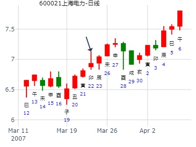
以下是引用钱水源在2007-3-22 17:21:00的发言：上海电力[600021]明天涨跌如何？丁亥 癸卯 乙卯 乙酉 (子丑空) 丁亥年二月初四(2007/03/22 17:32:10) 水风井 巽为风 玄武 父母子水 × 兄弟卯木 ／ 世 白虎 妻财戌土 ／ 世 子孙巳火 ／ 子孙午火：腾蛇 官鬼申金 ∥ 妻财未土 ∥ 勾陈 官鬼酉金 ／ 官鬼酉金 ／ 应兄弟寅木：朱雀 父母亥水 ／ 应 父母亥水 ／ 青龙 妻财丑土 ∥ 妻财丑土 ∥ 明天来看，这个是下跌的卦！
占事：纽威股份未来三个月的行情走势？
公历时间：2015年4月17日11时59分
干 支：乙未年 庚辰月 癸亥日 戊午时
旬 空：辰巳 申酉 (子丑) 子丑
震宫：水风井 巽宫：巽为风（六冲）
六神 伏 神 【本 卦】 【变 卦】
白虎 ▄▄ ▄▄ 父母戊子水 X-> ▄▄▄▄▄ 兄弟辛卯木 世
螣蛇 ▄▄▄▄▄ 妻财戊戌土 世 ▄▄▄▄▄ 子孙辛巳火
勾陈 子孙庚午火 ▄▄ ▄▄ 官鬼戊申金 ▄▄ ▄▄ 妻财辛未土
朱雀 ▄▄▄▄▄ 官鬼辛酉金 ▄▄▄▄▄ 官鬼辛酉金 应
青龙 兄弟庚寅木 ▄▄▄▄▄ 父母辛亥水 应 ▄▄▄▄▄ 父母辛亥水
玄武 ▄▄ ▄▄ 妻财辛丑土 ▄▄ ▄▄ 妻财辛丑土
子空，导致午月反而开跌。
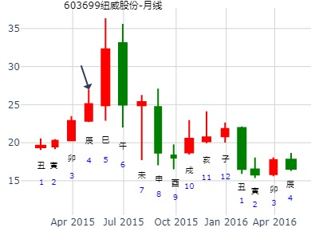
主帖标题: 2020.04.08日上证指数擂台赛第十四场第2局 Z方（日测参赛贴）
公历起卦时间：2020年4月8日0时22分 (手工指定)
干支：庚子年 庚辰月 辛巳日 戊子时 （日空：申酉）
神煞：驿马－亥 桃花－午 日禄－酉 贵人－寅，午
震宫：水风井 巽宫：巽为风 (六冲)
六神 伏神 本 卦 变 卦
螣蛇 父母戊子水 ▅▅ ▅▅ ╳→ 兄弟辛卯木 ▅▅▅▅▅ 世
勾陈 妻财戊戌土 ▅▅▅▅▅ 世 子孙辛巳火 ▅▅▅▅▅
朱雀 子孙庚午火 官鬼戊申金 ▅▅ ▅▅ 妻财辛未土 ▅▅ ▅▅
青龙 官鬼辛酉金 ▅▅▅▅▅ 官鬼辛酉金 ▅▅▅▅▅ 应
玄武 兄弟庚寅木 父母辛亥水 ▅▅▅▅▅ 应 父母辛亥水 ▅▅▅▅▅
白虎 妻财辛丑土 ▅▅ ▅▅ 妻财辛丑土 ▅▅ ▅▅
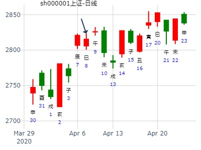
占事：2020年6月大盘涨跌？--by 金眼牛
公历起卦时间：2020年5月29日16时3分 (手工指定)
干支：庚子年 辛巳月 壬申日 戊申时 （日空：戌亥）
神煞：驿马－寅 桃花－酉 日禄－亥 贵人－卯，巳
震宫：水风井 巽宫：巽为风 (六冲)
六神 伏神 本 卦 变 卦
白虎 父母戊子水 ▅▅ ▅▅ ╳→ 兄弟辛卯木 ▅▅▅▅▅ 世
螣蛇 妻财戊戌土 ▅▅▅▅▅ 世 子孙辛巳火 ▅▅▅▅▅
勾陈 子孙庚午火 官鬼戊申金 ▅▅ ▅▅ 妻财辛未土 ▅▅ ▅▅
朱雀 官鬼辛酉金 ▅▅▅▅▅ 官鬼辛酉金 ▅▅▅▅▅ 应
青龙 兄弟庚寅木 父母辛亥水 ▅▅▅▅▅ 应 父母辛亥水 ▅▅▅▅▅
玄武 妻财辛丑土 ▅▅ ▅▅ 妻财辛丑土 ▅▅ ▅▅
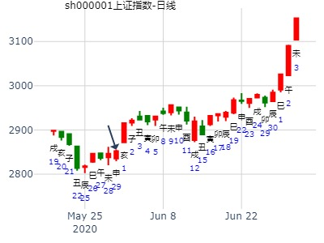
主帖标题: 6.27上证大盘
性别：女 占事: 6.27
起卦方式：手动摇卦 周易天地www.64gua.com六爻线上排盘系统
公历时间：2011年6月24日17时40分
干支：辛卯年 甲午月 庚戌日 乙酉时 旬空：午未 辰巳 寅卯 午未
震宫：水风井 巽宫：巽为风（六冲）
六神 伏 神 【本 卦】 【变 卦】
螣蛇 ▄▄ ▄▄ 父母戊子水 X-> ▄▄▄▄▄ 兄弟辛卯木 世
勾陈 ▄▄▄▄▄ 妻财戊戌土 世 ▄▄▄▄▄ 子孙辛巳火
朱雀 子孙庚午火 ▄▄ ▄▄ 官鬼戊申金 ▄▄ ▄▄ 妻财辛未土
青龙 ▄▄▄▄▄ 官鬼辛酉金 ▄▄▄▄▄ 官鬼辛酉金 应
玄武 兄弟庚寅木 ▄▄▄▄▄ 父母辛亥水 应 ▄▄▄▄▄ 父母辛亥水
白虎 ▄▄ ▄▄ 妻财辛丑土 ▄▄ ▄▄ 妻财辛丑土
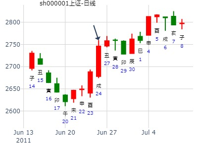
井之巽，深综指周卦（6月27日——7月1日）易迷仙子。
公历起卦时间：2011年6月26日8时4分 (手工指定)
干支：辛卯年 甲午月 壬子日 甲辰时 （日空：寅卯）
震宫：水风井 巽宫：巽为风 (六冲)
六神 伏神 本 卦 变 卦
白虎 父母戊子水 ▅▅ ▅▅ ╳→ 兄弟辛卯木 ▅▅▅▅▅ 世
腾蛇 妻财戊戌土 ▅▅▅▅▅ 世 子孙辛巳火 ▅▅▅▅▅
勾陈 子孙庚午火 官鬼戊申金 ▅▅ ▅▅ 妻财辛未土 ▅▅ ▅▅
朱雀 官鬼辛酉金 ▅▅▅▅▅ 官鬼辛酉金 ▅▅▅▅▅ 应
青龙 兄弟庚寅木 父母辛亥水 ▅▅▅▅▅ 应 父母辛亥水 ▅▅▅▅▅
玄武 妻财辛丑土 ▅▅ ▅▅ 妻财辛丑土 ▅▅ ▅▅
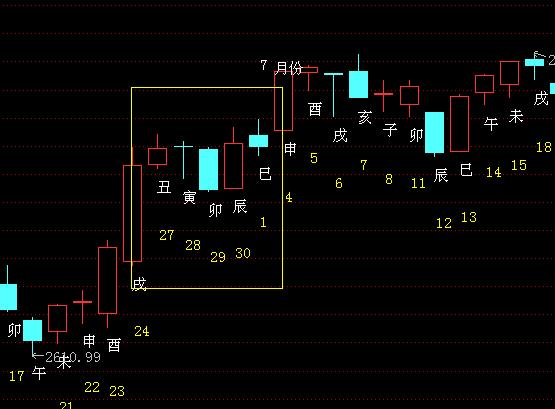
井之巽，600288，下周。周一即涨停。元吉。六爻父化兄。
（对井之巽，六爻思路不好解释，用爻辞更好解释）
刘占军 男 占事：600288，下周走势
公历起卦时间：2009年12月26日23时13分 (在线摇卦)
干支：己丑年 丙子月 丙午日 戊子时 （日空：寅卯）
震宫：水风井 巽宫：巽为风 (六冲)
六神 伏神 本 卦 变 卦
青龙 父母戊子水 ▅▅ ▅▅ ╳→ 兄弟辛卯木 ▅▅▅▅▅ 世
玄武 妻财戊戌土 ▅▅▅▅▅ 世 子孙辛巳火 ▅▅▅▅▅
白虎 子孙庚午火 官鬼戊申金 ▅▅ ▅▅ 妻财辛未土 ▅▅ ▅▅
腾蛇 官鬼辛酉金 ▅▅▅▅▅ 官鬼辛酉金 ▅▅▅▅▅ 应
勾陈 兄弟庚寅木 父母辛亥水 ▅▅▅▅▅ 应 父母辛亥水 ▅▅▅▅▅
朱雀 妻财辛丑土 ▅▅ ▅▅ 妻财辛丑土 ▅▅ ▅▅
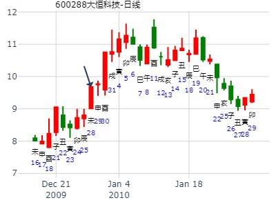
井之巽，井收勿幕，暴涨。父化兄。2012年寅月上海股市走势（青和）
手工指定 (周易世界 www.zhouyiworld.com)
公历时间：2012年2月4日22时7分
干 支：壬辰年 壬寅月 乙未日 丁亥时
旬 空：午未 辰巳 辰巳 午未 神 煞：驿马─巳 桃花─子 日禄─卯 贵人─子，申
震宫：水风井 巽宫：巽为风（六冲）
六神 伏 神 【本 卦】 【变 卦】
玄武 ▄▄ ▄▄ 父母戊子水 X-> ▄▄▄▄▄ 兄弟辛卯木 世
白虎 ▄▄▄▄▄ 妻财戊戌土 世 ▄▄▄▄▄ 子孙辛巳火
螣蛇 子孙庚午火 ▄▄ ▄▄ 官鬼戊申金 ▄▄ ▄▄ 妻财辛未土
勾陈 ▄▄▄▄▄ 官鬼辛酉金 ▄▄▄▄▄ 官鬼辛酉金 应
朱雀 兄弟庚寅木 ▄▄▄▄▄ 父母辛亥水 应 ▄▄▄▄▄ 父母辛亥水
青龙 ▄▄ ▄▄ 妻财辛丑土 ▄▄ ▄▄ 妻财辛丑土
此处世爻财土地得日扶。本来子水化兄弟不为好事。尤其是兄弟值月。
1.兄弟值月，依然暴涨，莫非是不上卦的原因。
2.父化兄，本为不利组合，依然涨。
3.大象，井化巽，巽为大利商业。
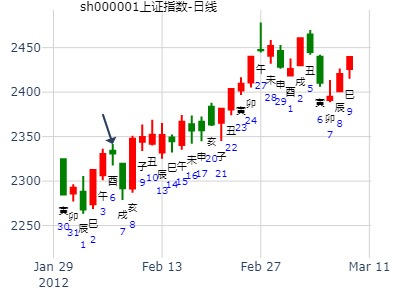
井之巽，深综指周卦（6月27日——7月1日）易迷仙子。
公历起卦时间：2011年6月26日8时4分 (手工指定)
干支：辛卯年 甲午月 壬子日 甲辰时 （日空：寅卯）
神煞：驿马－寅 桃花－酉 日禄－亥 贵人－卯，巳
震宫：水风井 巽宫：巽为风 (六冲)
六神 伏神 本 卦 变 卦
白虎 父母戊子水 ▅▅ ▅▅ ╳→ 兄弟辛卯木 ▅▅▅▅▅ 世
腾蛇 妻财戊戌土 ▅▅▅▅▅ 世 子孙辛巳火 ▅▅▅▅▅
勾陈 子孙庚午火 官鬼戊申金 ▅▅ ▅▅ 妻财辛未土 ▅▅ ▅▅
朱雀 官鬼辛酉金 ▅▅▅▅▅ 官鬼辛酉金 ▅▅▅▅▅ 应
青龙 兄弟庚寅木 父母辛亥水 ▅▅▅▅▅ 应 父母辛亥水 ▅▅▅▅▅
玄武 妻财辛丑土 ▅▅ ▅▅ 妻财辛丑土 ▅▅ ▅▅
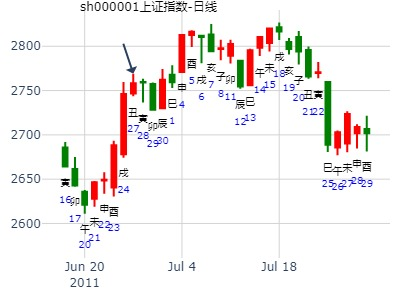
主帖标题: 601989未来两天行情 占事:601989
起卦方式：报数起卦 (198,645) 动爻加时辰
公历时间：2015年6月3日15时6分
干 支：乙未年 辛巳月 庚戌日 甲申时
旬 空：辰巳 申酉 寅卯 午未
震宫：水风井 巽宫：巽为风（六冲）
六神 伏 神 【本 卦】 【变 卦】
螣蛇 ▄▄ ▄▄ 父母戊子水 X-> ▄▄▄▄▄ 兄弟辛卯木 世
勾陈 ▄▄▄▄▄ 妻财戊戌土 世 ▄▄▄▄▄ 子孙辛巳火
朱雀 子孙庚午火 ▄▄ ▄▄ 官鬼戊申金 ▄▄ ▄▄ 妻财辛未土
青龙 ▄▄▄▄▄ 官鬼辛酉金 ▄▄▄▄▄ 官鬼辛酉金 应
玄武 兄弟庚寅木 ▄▄▄▄▄ 父母辛亥水 应 ▄▄▄▄▄ 父母辛亥水
白虎 ▄▄ ▄▄ 妻财辛丑土 ▄▄ ▄▄ 妻财辛丑土
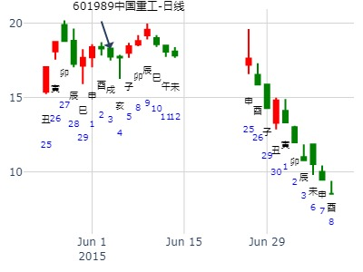
主帖标题: 请易经高手解7月11日大盘涨跌卦!
占事：7月11日大盘涨跌?
公历时间：2007年7月10日15时6分 星期二
干支：丁亥年 丁未月 乙巳日 甲申时 (旬空：寅卯)
神煞：驿马—亥 桃花—午 日禄—卯 贵人—子，申
震宫：水风井 巽宫：巽为风（六冲）
六神 伏 神 【本 卦】 【变 卦】
玄武 ▅▅ ▅▅ 父母戊子水 ×→ ▅▅▅▅▅ 兄弟辛卯木 世
白虎 ▅▅▅▅▅ 妻财戊戌土 世 ▅▅▅▅▅ 子孙辛巳火
螣蛇 子孙庚午火 ▅▅ ▅▅ 官鬼戊申金 ▅▅ ▅▅ 妻财辛未土
勾陈 ▅▅▅▅▅ 官鬼辛酉金 ▅▅▅▅▅ 官鬼辛酉金 应
朱雀 兄弟庚寅木 ▅▅▅▅▅ 父母辛亥水 应 ▅▅▅▅▅ 父母辛亥水
青龙 ▅▅ ▅▅ 妻财辛丑土 ▅▅ ▅▅ 妻财辛丑土
占事：下周大盘？ 九戒群教授手机摇动的卦
起卦方式：手动摇卦 易经股市论坛 www.yijingstock.com 在线排盘系统
公历时间：2014年8月9日13时13分
干 支：甲午年 壬申月 壬子日 丁未时
旬 空：辰巳 戌亥 (寅卯) 寅卯
震宫：水风井 巽宫：巽为风（六冲）
六神 伏 神 【本 卦】 【变 卦】
白虎 ▄▄ ▄▄ 父母戊子水 X-> ▄▄▄▄▄ 兄弟辛卯木 世
螣蛇 ▄▄▄▄▄ 妻财戊戌土 世 ▄▄▄▄▄ 子孙辛巳火
勾陈 子孙庚午火 ▄▄ ▄▄ 官鬼戊申金 ▄▄ ▄▄ 妻财辛未土
朱雀 ▄▄▄▄▄ 官鬼辛酉金 ▄▄▄▄▄ 官鬼辛酉金 应
青龙 兄弟庚寅木 ▄▄▄▄▄ 父母辛亥水 应 ▄▄▄▄▄ 父母辛亥水
玄武 ▄▄ ▄▄ 妻财辛丑土 ▄▄ ▄▄ 妻财辛丑土
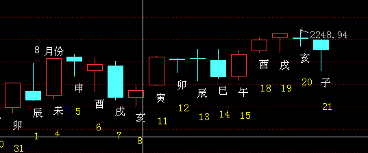
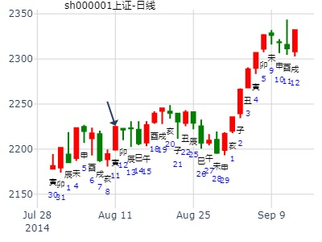
2015年8月第5周大盘
时间: 2015-08-28
干支: 乙未年甲申月丙子日 (旬空: 申酉 )
水风井 巽为风
六神 伏神 本 卦 变 卦
青龙 ▅▅ ▅▅ 父母子水 Ｘ→ ▅▅▅▅▅ 兄弟卯木 世
玄武 ▅▅▅▅▅ 妻财戌土 世 ▅▅▅▅▅ 子孙巳火
白虎 子孙午火▅▅ ▅▅ 官鬼申金 ▅▅ ▅▅ 妻财未土
腾蛇 ▅▅▅▅▅ 官鬼酉金 ▅▅▅▅▅ 官鬼酉金 应
勾陈 兄弟寅木▅▅▅▅▅ 父母亥水 应 ▅▅▅▅▅ 父母亥水
朱雀 ▅▅ ▅▅ 妻财丑土 ▅▅ ▅▅ 妻财丑土
上六：井收勿幕，有孚元吉。
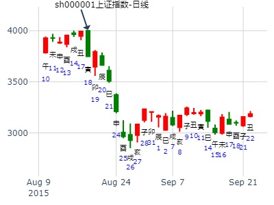
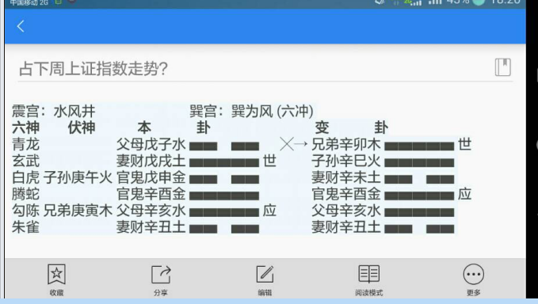
主帖标题: 9月7日进出操作卦。
今日青山纸业[600103]如何？起卦方式：手工指定 -周易天地
公历时间：2007年9月7日2时59分
干支：丁亥年 戊申月 甲辰日 乙丑时 旬空：午未 寅卯 （寅卯） 戌亥
神煞：驿马─寅 桃花─酉 日禄─寅 贵人─丑，未
震宫：水风井 巽宫：巽为风（六冲）
六神 伏 神 【本 卦】 【变 卦】
玄武 ▄▄ ▄▄ 父母戊子水 X-> ▄▄▄▄▄ 兄弟辛卯木 世
白虎 ▄▄▄▄▄ 妻财戊戌土 世 ▄▄▄▄▄ 子孙辛巳火
螣蛇 子孙庚午火 ▄▄ ▄▄ 官鬼戊申金 ▄▄ ▄▄ 妻财辛未土
勾陈 ▄▄▄▄▄ 官鬼辛酉金 ▄▄▄▄▄ 官鬼辛酉金 应
朱雀 兄弟庚寅木 ▄▄▄▄▄ 父母辛亥水 应 ▄▄▄▄▄ 父母辛亥水
青龙 ▄▄ ▄▄ 妻财辛丑土 ▄▄ ▄▄ 妻财辛丑土
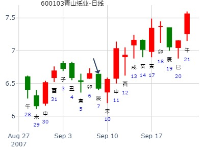
主帖标题: 今天申购能中吗--水易缘
纳甲六爻在线排盘婚否： 出生年:1971 性别：女
占事：300536今日何时申购能中 起卦方式：手动摇卦
公历时间：2016年9月6日9时30分
干 支：丙申年 丙申月 辛卯日 癸巳时
旬 空：辰巳 辰巳 午未 午未
震宫：水风井 巽宫：巽为风（六冲）
六神 伏 神 【本 卦】 【变 卦】
螣蛇 ▄▄ ▄▄ 父母戊子水 × ▄▄▄▄▄ 兄弟辛卯木 世
勾陈 ▄▄▄▄▄ 妻财戊戌土 世 ▄▄▄▄▄ 子孙辛巳火
朱雀 子孙庚午火 ▄▄ ▄▄ 官鬼戊申金 ▄▄ ▄▄ 妻财辛未土
青龙 ▄▄▄▄▄ 官鬼辛酉金 ▄▄▄▄▄ 官鬼辛酉金 应
玄武 兄弟庚寅木 ▄▄▄▄▄ 父母辛亥水 应 ▄▄▄▄▄ 父母辛亥水
白虎 ▄▄ ▄▄ 妻财辛丑土 ▄▄ ▄▄ 妻财辛丑土
主帖标题: 我与90哥tjlr交流成卦、断卦的窍门
你还真想尝尝珍珠斐翆白玉汤，我要不露一丑，你还真不知它是什么味。就如你所愿。这汤我做了，熏死你。来而不往非礼也，你也解我一卦。
问25日大盘
起卦公历：2019年10月24日11时12分(北京时间)
起卦农历：二○一九年 九月 廿六日 午时。
干支： 己亥年 甲戌月 甲午日 庚午时 (卦身：亥)乙未
主变卦 水风井(震宫) 之 巽为风(巽宫) [空亡:辰、巳]
玄武 ━ ━×父母子水 ━━━ 兄弟卯木 世
白虎 ━━━ 妻财戌土 世 ━━━ 子孙巳火
螣蛇 子午 ━ ━ 官鬼申金 ━ ━ 妻财未土
勾陈 ━━━ 官鬼酉金 ━━━ 官鬼酉金 应
朱雀 兄寅 ━━━ 父母亥水 应 ━━━ 父母亥水
青龙 ━ ━ 妻财丑土 ━ ━ 妻财丑土
◇上六:井收勿幕，有孚。元吉。 象曰：元吉在上，大成也。
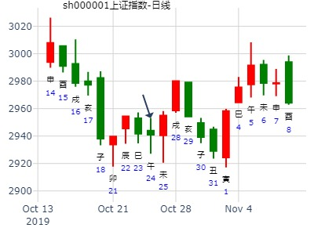
主题：金力泰本月的走势
己亥 乙亥 甲寅 辛未 (日空:子丑 时空:戌亥 四大空亡:金水)
(2019/11/13 13:59:41)
水风井 巽为风
玄武 父母甲子 × 兄弟丁卯 ／ 巽
白虎 妻财甲戌 ／ 震 子孙己巳 ／
子孙庚午：腾蛇 官鬼壬申 ∥ 妻财辛未 ∥
勾陈 官鬼癸酉 ／ 官鬼癸酉 ／ 应
兄弟丙寅：朱雀 父母乙亥 ／ 应 父母乙亥 ／
青龙 妻财乙丑 ∥ 妻财乙丑 ∥
白虎财爻持世，兄弟值日，暗示其价正贱，父母发动化兄，暗示空方力消，子孙伏藏不克为吉，本月此卦顺势而涨收阳，但午日稍有调整
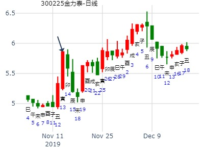